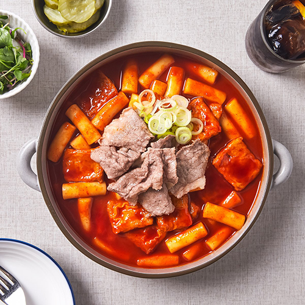

<html>

<body>
    <!-- 
    1~4 사이의 숫자를 입력하면 해당 번호 이미지 출력
    취소 버튼 클릭시 취소했습니다 출력
    그 외는 해당 번호만 입력해주세요 출력
  -->

    <script>
        const num = prompt('1~4까지의 숫자 중 하나만 입력해 주세요');

        switch (num) {
            case "1":
                document.body.innerHTML = '';
                break;
            case "2":
                document.body.innerHTML = '';
                break;
            case "3":
                document.body.innerHTML = '';
                break;
            case "4":
                document.body.innerHTML = '';
                break;
            default:
                document.body.innerHTML = `해당 번호만 입력해주세요`;
                break;
        }
    </script>
</body>

</html>